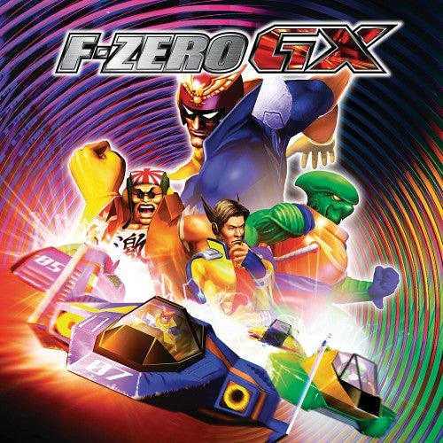
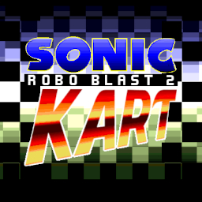
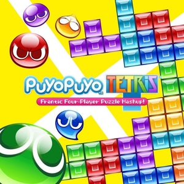

Video Games
An undeniable influence for my creative works is video games, a number of racing games and other speed/time based titles catch my interest, such as these below. Click around and you can check for my recorded times and see if you are faster than me! 



F-zero GX; SRB2 Kart; Tetrio; Puyo Puyo Tetris; SA2 Leaderboards; Ty 2 Leaderboards
© fuzai neko 2023